A deep, reproducible study of every NO₂ representation we've built (level · intensity residual · year-over-year · STL) against steel activity (CREA blast-furnace rate + pig-iron, crude-steel and BF-starting-rate aux series) and the economy (BHP/RIO/VALE/SLX vs ACWI). The brief: don't assume the NO₂↔production lag — infer it from the data, and surface correlations the static numbers hide. The headline: there is no single clean lag, but there is a strong, previously invisible regime-dependent coupling.
Jump to: 1 · The lag · 2 · Regime dependence · 3 · Decoupling = trend artifact · 4 · Economy · 5 · Seasonal · 6 · Better seasonality? · 7 · Daily & the weekly lever · 8 · Spatial-scale sensitivity · 9 · Change-variance decomposition · 10 · 2023 regime peak, resolved · 11 · VIIRS thermal triangulation · 12 · Nowcast feasibility null · 13 · Flux-divergence attribution null · 14 · Takeaways
(1) No single NO₂→BF lag: levels carry a persistent negative "decoupling" at every lag; de-trended NO₂ shows only a weak quasi-annual wave inside the noise band — residual seasonality, not a stable lead. (2) The relationship is regime-dependent: a rolling correlation swings from −0.42 to +0.73 (mid-2023 clears the literature bar), hidden by the flat full-sample r≈0.15. (3) The famous −0.35 "decoupling" is mostly a whole-sample trend artifact — within sub-periods the level correlation is +0.27 then ~0.
Cross-correlating each NO₂ variant against the BF operating rate across lags (positive lag = NO₂ leads) shows two different structures. The level (purple) sits below the white-noise band at every lag — a persistent negative "decoupling", deepest at −6 months (r=−0.50). The de-trended variants (yoy/STL/intensity-residual) trace an almost identical quasi-annual wave inside the band: a trough at −6, a bump at −1/−2, a dip at +2, and a weak peak at +6 (yoy r=0.24, barely above the band). That all three share the same wave is the tell — it is residual annual seasonality (the heating-season steel-share shift, Wen 2024), not a causal lead. So the apparent "+6-month NO₂ lead" is most likely a seasonal artifact.
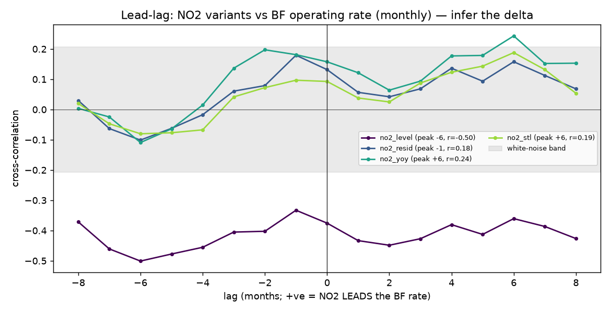
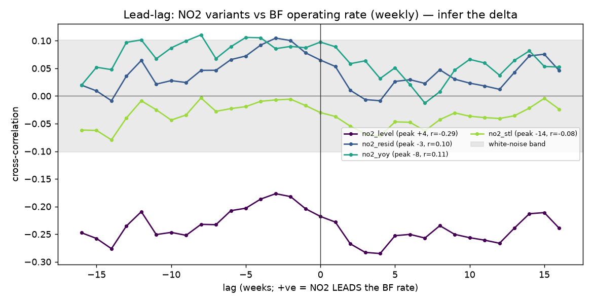
| variant (monthly) | r at lag 0 | best lag | r at best | read |
|---|---|---|---|---|
| NO₂ level | −0.38 | −6 mo | −0.50 | persistent decoupling (see §3) |
| NO₂ intensity residual | +0.13 | −1 mo | +0.18 | weak, inside band |
| NO₂ year-over-year | +0.16 | +6 mo | +0.24 | weak; quasi-annual wave (seasonal) |
| NO₂ STL residual | +0.09 | +6 mo | +0.19 | weak; same wave |
For the catalyst: there is no fixed Δ to bake in — the offset is seasonal/unstable, so the symmetric match window was the right design; report leads per regime, not as one global number.
The flat full-sample correlation (r≈0.15) is an average over a strong but unstable relationship. A rolling 18-month correlation of de-trended NO₂ against the BF rate swings from −0.42 to +0.73, positive 72–86% of the time, and peaks at ≈+0.73 in mid-2023 — above the 0.5–0.75 literature bar — then breaks down through 2024. The indicator worked in 2022–2023 and stopped working in 2024. This is the structure the static numbers hid.
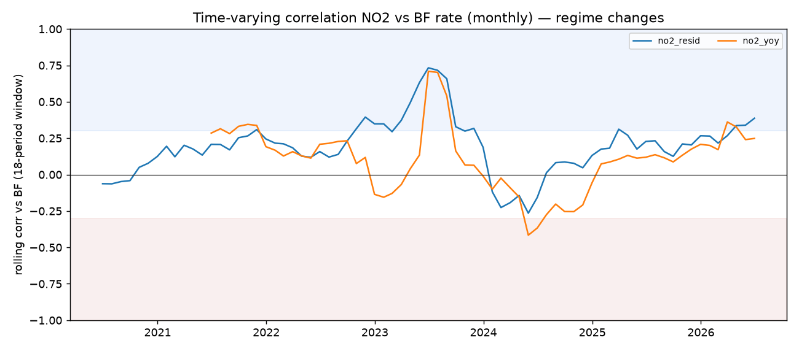
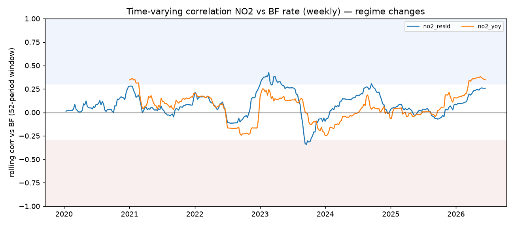
Caveat (now resolved — see §10): a single-window r=0.73 on a partial series can be over-fitting a good stretch. This exploratory peak was carried as an open thread for a pre-registered, multiplicity-disciplined test. That test (NOX-012, on the full-series intensity residual with a scan-maximum null) has now run: the peak attenuates to r=0.276 and is consistent with a rolling-window multiple-comparisons artefact. The regime/event framing was still the right lens to test it under — but the "one window the signal appeared" does not survive the honest null.
Split the level correlation by period and the negative sign largely disappears:
| period | level NO₂ vs BF (monthly) | n | read |
|---|---|---|---|
| 2019–2021 | +0.27 | 35 | positive within-period |
| 2022–2026 | 0.00 | 54 | flat within-period |
| 2019–2026 (full) | −0.35 | 90 | negative only across the whole span |
The −0.35 comes from two secular trends crossing over seven years — NO₂ declining (retrofits) while the BF rate rises — a Simpson's-paradox-style artifact, not a within-regime inverse relationship. So "decoupling" is a long-horizon trend story; intra-period there is no inversion to fear. Don't over-interpret the −0.35.
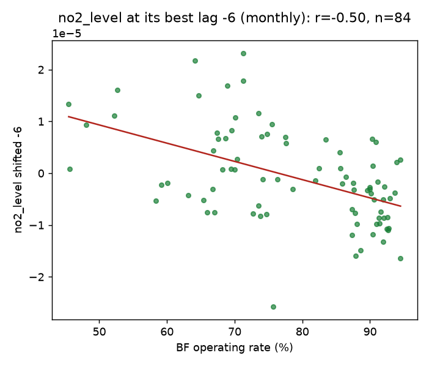
De-trended NO₂ is consistently, mildly negative against miner abnormal returns (RIO −0.28, VALE −0.23, SLX −0.15 at lag 0, monthly), and the intensity residual is mildly negative vs crude-steel output (−0.21). But none clears |r|≥0.3, the lead-lag peaks have opposite signs across instruments, and the four miners are effectively one dimension (mutually r≈0.85) — so this is one weak, sign-unstable observation, below the multiple-testing floor. No exploitable NO₂→market link on this partial data.
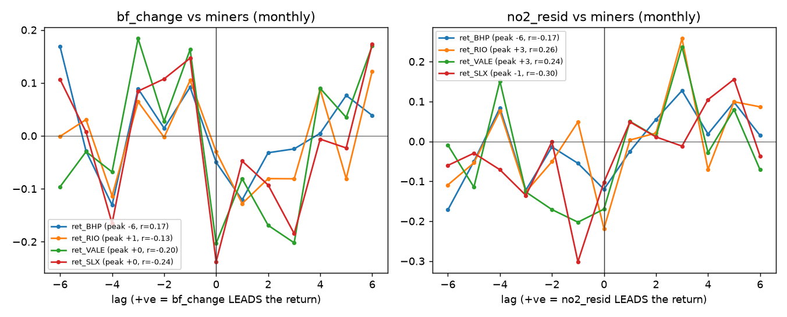
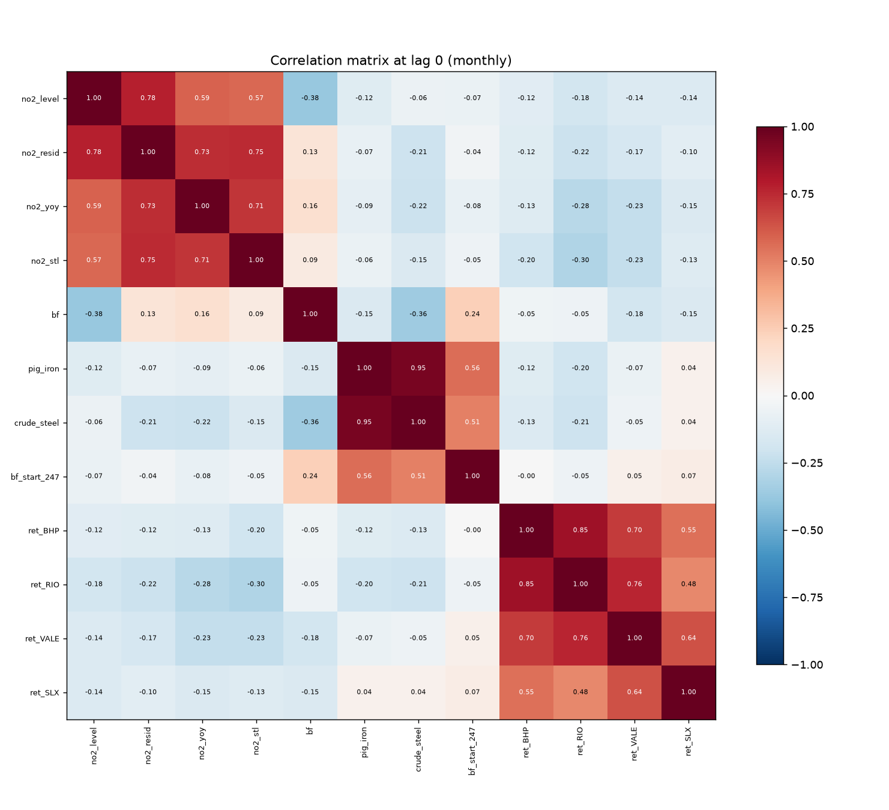
Sanity confirmed: pig-iron ~ crude-steel r=0.95; BF starting-rate-247 ~ output r≈0.5; miners cluster at 0.85. The data is coherent — the missing strong cell is precisely NO₂↔steel, consistent with a weak (and regime-gated) satellite signal.
Monthly climatology shows the heating-season imprint that the de-trended CCF wave (§1) reflects — another reason to model the heating-season interaction explicitly rather than difference it away.
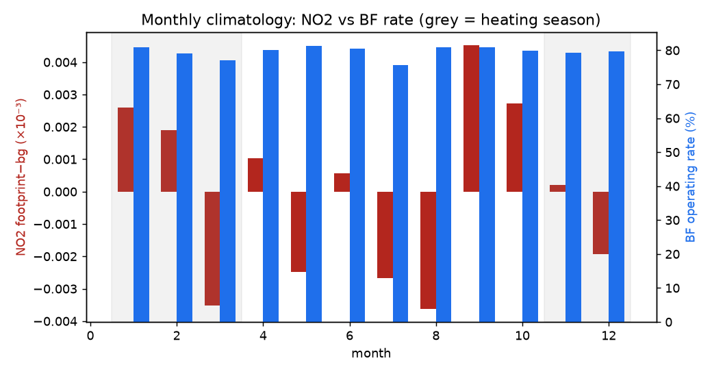
The §1 residual wave is leftover annual seasonality, so we tested the developer's idea — a Prophet-style decomposition (flexible trend + multi-frequency Fourier seasonality), implemented lightweight as harmonic regression (no heavy dependency): remove K annual harmonics from the intensity residual. The static full-sample correlation barely moves (still ~0.12–0.16, because the regime averaging dominates — §2), but the best-regime coupling improves:
| method (monthly) | |best-lag r| | best-regime |r| (rolling 18-mo) |
|---|---|---|
| yoy | 0.24 | 0.71 |
| STL | 0.36 | 0.66 |
| intensity residual (NOX-003.1) | 0.18 | 0.73 |
| + Fourier K=1 (annual) | 0.17 | 0.78 |
| + Fourier K=2 | 0.17 | 0.77 |
| + Fourier K=3 / K=4 | 0.18 | 0.75 / 0.76 |
Removing the single fundamental annual harmonic (K=1) lifts the best-regime correlation to r≈0.78 — above the literature bar and the cleanest of all methods. More harmonics (K≥3) slightly worsen it (over-fitting the seasonal shape), so one annual sinusoid is the sweet spot. Weekly stays noise-dominated (rolling-peak ~0.40) — the gain is monthly only.
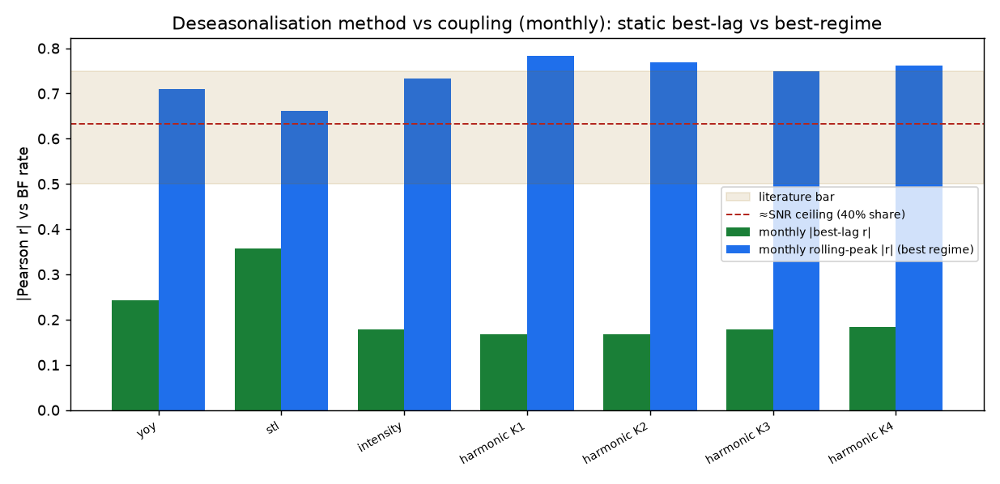
If steel is fraction f of the column variance, the attainable correlation is bounded by ~√f; a 40% mean share would imply a ceiling of ~0.63. But the best-regime r≈0.78 implies a variance share of ~61% in that window — i.e. steel drives far more of the variability than of the mean when it is the swing factor (sharp curtailments come and go), which is exactly the regime where an event/catalyst marker should work. So the 40% number is not the binding limit for a change detector; it bounds a level estimator.
The only way to beat the ~40% mean-share ceiling without flux divergence is to raise steel's variance share — and the natural handle is the day-of-week cycle: steel is baseload (runs 24/7, flat across the week) while traffic/other sources carry a weekly cycle, so removing a weekly seasonal term would isolate the industrial component. That cycle is invisible in the weekly composite, so we built a daily footprint (1,984 valid days / 73% after cloud screening, weekdays balanced) and a Prophet decomposition (trend + yearly + weekly).
Result: an honest null on the lever. The weekly component is flat (variance 0.5% of signal; weekday effects ≈0) — confirming steel is baseload, but precisely therefore there is no weekly cycle to remove (and TROPOMI's single ~13:30 overpass can't resolve a traffic commute cycle anyway). The daily-Prophet residual couples to the BF rate at best-regime r≈0.65 — below the weekly harmonic-K1 (0.78) and intensity (0.73): daily adds per-point noise without adding weekly signal. Yearly-only ≈ yearly+weekly; and no usable quarterly/four-month cycle exists — the BF rate's sub-annual power sits at ~semiannual (the heating-season curtailment on/off, already an annual harmonic), not aligned with the NO₂ residual's ~2–3.6-month wiggles.
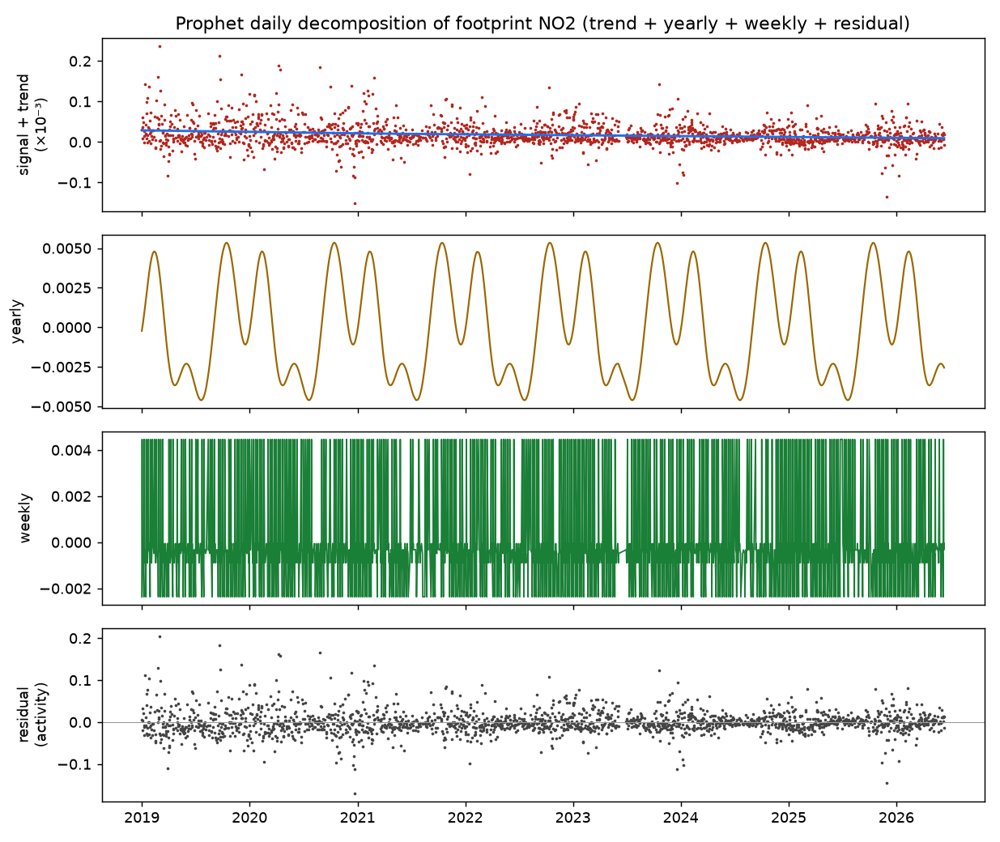
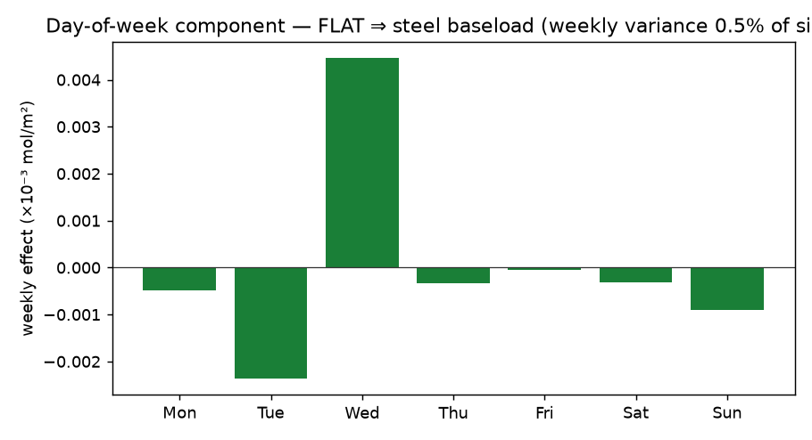
The Prophet/daily capability is kept and tested (it could revive the weekly lever with a multi-overpass geostationary sensor like GEMS), but harmonic-K1 (weekly) remains the method of record.
Every result above used one fixed scale (0.25° AOI buffer, native ~5 km grid) and the naïve Pearson p — which assumes i.i.d. data and badly overstates significance for these strongly autocorrelated series (the level's effective sample size is ~225 of 377 weekly, ~39 of 90 monthly). NOX-008 re-tests the coupling two ways: (a) an autocorrelation-robust standard — effective-N (first-order + Newey-West), a moving-block bootstrap CI of r, a block-permutation null, and a Benjamini–Hochberg FDR correction across the family; and (b) a spatial-scale sweep over the existing cube: AOI extent (0.25° vs 0.10° buffer, a strict clip) × grid resolution (native vs block-averaged 0.10/0.15/0.25°, aggregation only — never interpolation). This is the Parubets & Naito (2025) scale test (significant coarse → lost/flipped fine) plus the source-isolation hypothesis (a tighter AOI excludes Beijing-Tianjin-Hebei background; steel is only ~30–43% of Tangshan NO₂, Wen 2024).
Result: a hardened null. Of 128 (scale × variant × lag) tests, zero survive the robust + FDR bar; the 34 naïve-significant cells are all monthly peak-lag artefacts that collapse to fragile (naive-only). The tight 0.10° AOI does not rescue the signal (Δ|r| ≈ 0.02–0.05, never significant), and the native↔coarse sign flips are noise-level (|r| < 0.13). The conclusion graduates from "no signal at one scale" to "no robust coupling at any reasonable scale".
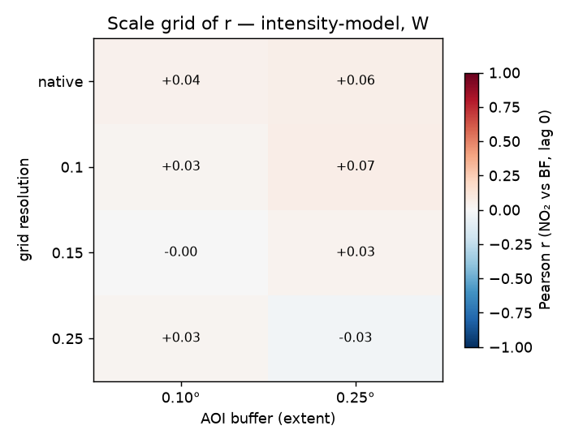
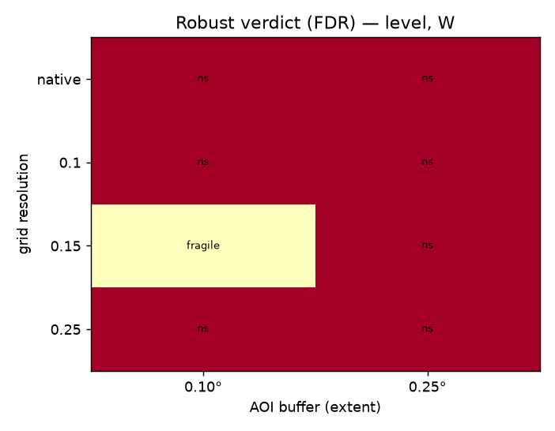
The robust-significance engine (noxus/validation/robust.py)
is now the project standard for any index↔benchmark correlation; the naïve p is shown only to expose the
gap. Spatial scale is closed as a lever — remaining avenues are flux divergence (NOX-005), a diurnal sensor
(GEMS, NOX-007), or the regime/event framing.
§6 raised a live possibility: the ~40% steel mean share bounds a level estimator, but a change/activity detector lives in the variance of changes, where steel's share could be higher (critique #4's "variance-share headroom"). NOX-009 measures it directly. It partitions the variance of the changes in the footprint NO₂ signal (footprint 5 km − background ring 25–60 km) into four terms — (a) the shared regional common mode (the background ring), (b) the meteo term (ERA5 regression), (c) the steel-local footprint-specific structure, and (d) unexplained noise — across four cells: two change bases (first-difference, deseasonalised residual) × two resolutions (weekly, daily). The partition is benchmark-blind (NFR-001): it reads NO₂ + meteo + background only, never the CREA benchmark. All four cells are reported (no cherry-pick, NFR-003).
| basis × resolution | n | regional | meteo | steel-local | noise | change ceiling √f (block CI) | verdict |
|---|---|---|---|---|---|---|---|
| first-diff · W | 388 | 0.944 | 0.005 | 0.000 | 0.051 | 0.00 [0.00, 0.00] | SNR-bound |
| deseason · W | 389 | 0.951 | 0.002 | 0.006 | 0.040 | 0.08 [0.00, 0.115] | SNR-bound |
| first-diff · D | 1555 | 0.933 | 0.005 | 0.000 | 0.062 | 0.00 [0.00, 0.00] | SNR-bound |
| deseason · D | 2003 | 0.944 | 0.003 | 0.000 | 0.052 | 0.00 [0.00, 0.053] | SNR-bound |
The regional common mode dominates every cell (≈0.93–0.95); meteo is negligible (≈0.002–0.005); the steel-local change-variance share is ≈0 (0.000–0.006, clamped to 0 in three of four cells where the raw incremental term went negative); noise is ≈0.04–0.06. The implied change-detector ceiling is √(steel-local share) ≈ 0.00–0.08 (CI upper bound ≤0.115). Level ceiling shown for contrast: √(0.30–0.43 Wen mean share) = 0.55–0.66 — used only as a contrast, never as a fit target.
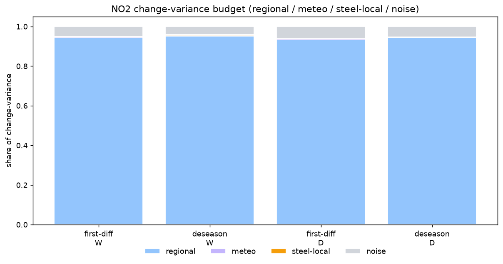
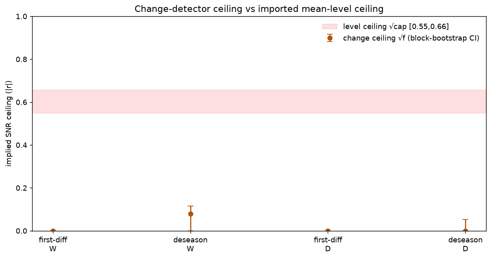
Critique #4 predicted the change-variance steel share would be higher than the mean-level share, leaving headroom a level estimator cannot see. The measurement shows the opposite: the steel-local change-variance share is ≈0 within its CI — lower than the 30–43% level share, not higher. The verdict in all four cells is SNR-bound / physical: the near-null (weekly r≈0.07) is a genuine signal-to-noise floor, not an artefact of the target or the method. The physical reason is regional coherence — the 5 km footprint and the 25–60 km background ring move almost in lockstep, so once the regional common mode and meteo are removed, almost no steel-specific variance remains in the changes. The variance-share lever does not reopen the signal.
Estimator note (F1): terms (c)/(d) are realised as a
structured-vs-white split of the post-meteo residual — structured = γ0 − ½·mean(Δresidual²),
the remainder white noise — because the inputs are footprint/background/meteo only, with no observed local
proxy to add as a nested regressor; a negative structured increment is recorded raw and the steel-local share
clamps to 0 (EDGE-002). Reproduce: uv run noxus variance →
data/derived/variance_decomposition.csv, then
uv run python analysis/variance_decomposition.py → the two figures +
variance_decomposition_findings.txt. This closes the variance-share question and feeds the
NOX-010 (deweathering) / NOX-011 (VIIRS triangulation) go/no-go.
§2 surfaced the most tantalising pattern in the whole exploration: a rolling-18-month correlation that
peaked in mid-2023 (exploratory r≈0.73–0.78, above the literature bar) and then broke down through
2024 — "the one window the signal appeared". That was always an open thread, not a result:
a rolling-window maximum is a multiple-comparisons statistic (the single most favourable window will look
large by chance), so a naïve peak r is not evidence. NOX-012 built the machinery to test it honestly and
ran it on the full-series NOX-003.1 intensity residual (weekly-mean-aligned), under fixed
RegimeStudyConfig knobs chosen before any CREA outcome was viewed (benchmark-blind;
no CREA-tuning parameter), with strict no-look-ahead and a public, source-cited curtailment calendar as the
event ground truth. Three questions, three answers.
Headline cell (harmonic deseasonalisation, 18-month / 78-week window): peak r=0.276 at
2023-08-27. The scan-maximum null — a serial-dependence-preserving moving-block
permutation whose reference distribution is the max rolling-r across all 341 overlapping windows —
puts this peak at observed=0.276, p=0.325, the 67.5th percentile, beyond_band=False
(block=7, draws=2000). A peak of this size is unsurprising given how many overlapping
windows were effectively scanned. This is a valid, first-class finding (Morris & Zhang 2019), not a
failed experiment — the exploratory r≈0.76 was a favourable-window maximum, and the pre-registered,
scan-max-disciplined construction exists precisely to regress it to the mean.
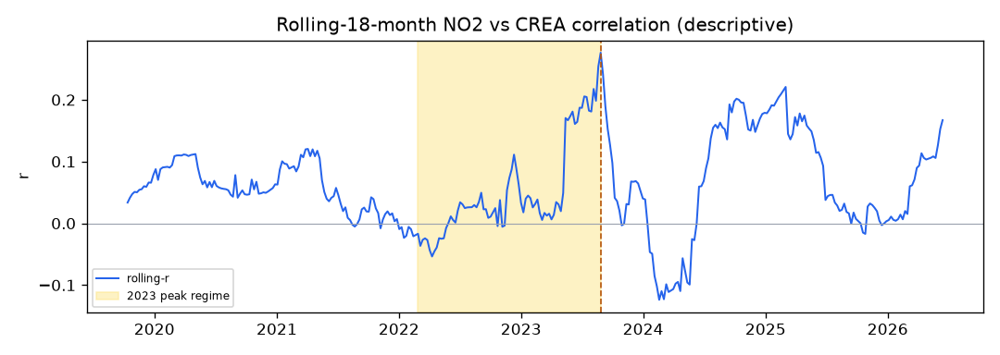
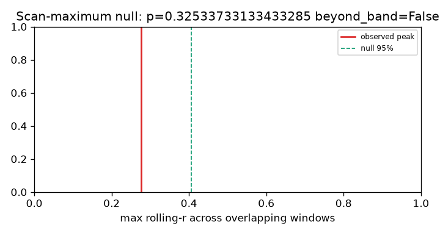
beyond_band=False) — the peak is not surprising under
its own scan multiplicity.BH-FDR over the fixed 6-cell correlation grid (2 deseason variants × {18-month, 52-week}
peak cells + the 2024 collapse cell per variant, n_tests=6) reports "peak survives BH-FDR:
True" — but that boolean is driven by the two 52-week secondary cells
(fdr_significant=True, p_fdr≈0.0078). The 18-month headline peak is itself marginally
not FDR-significant (p_fdr≈0.0516). These are two different lenses and both are reported:
the grid-FDR answers "among these specific pre-registered spans, which survive?"; the scan-maximum null
answers the question the headline claim actually makes — "is a rolling-window maximum of 0.276
surprising given how many windows were scanned?". Because "the correlation peaked at X" is intrinsically a
rolling-max claim, the scan-max null is the honest arbiter and it governs the verdict. No
contradiction: a fixed 52-week span can clear FDR while the rolling-window peak is unsurprising under the
multiplicity that generated it.
A leave-one-event-out jackknife against the coarse-floor curtailment calendar tests whether the coupling is carried by a few large curtailment events. It is not: full r=0.257 → r=0.349 with the top 3 events removed. Removing the largest events does not kill (indeed slightly strengthens) the correlation, so whatever coupling is present is continuous, not driven by a handful of big curtailments. The regime-conditioned event study is consistent — precision/recall of NO₂ production events against the calendar is low across thresholds (e.g. thr=2.0 peak regime precision=0.00 / recall=0.00; collapse regime precision=0.50 / recall=0.22), the picture of a weak, diffuse link rather than sharp event locking.
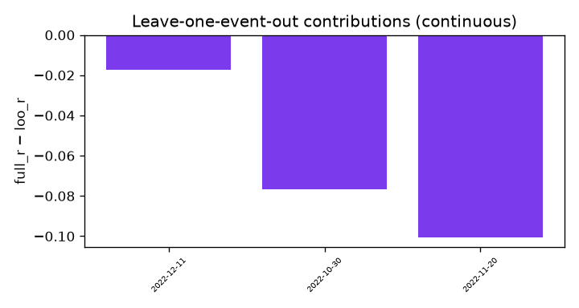
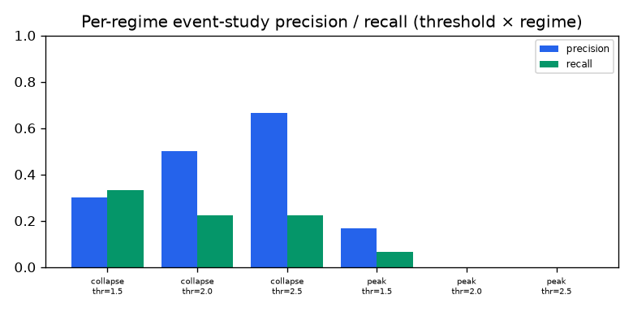
The dual collapse diagnostic attributes the 2024 fall-off to intensity-decoupling
(calendar_shift=False, intensity_shift=True — a single arm shifted). This is
consistent with the NOX-003.1 secular intensity decline (steel getting cleaner per tonne), not
with a change in the curtailment regime. So the "it worked in 2023 and stopped in 2024" story is better
read as a slow decoupling of NO₂ from output, not as a policy/curtailment switch.
Calendar note: the T1 feasibility gate landed at
GO-coarse-floor — 21 sourced structural events (Spring Festival + Golden Week holidays +
winter heating-season restriction windows, each cited to State Council / MEE-Hebei DEE). A richer
event-level curtailment-campaign calendar remains pending a live survey (live_survey_pending=True);
no event-level dates were fabricated. Reproduce: uv run noxus regime-study →
data/derived/regime_study.csv + regime_event_study.csv +
regime_study_summary.txt, then uv run python analysis/regime_2023_event_study.py
→ the four figures above + regime_2023_findings.txt. This closes the 2023-regime thread the
full-series arbiter run (NOX-003.1 T10) left open.
Critique #1 — the "fraudulent/unverifiable target": the CREA benchmark is a commercial trader survey (WIND / Custeel), so a near-null could always be blamed on either the feature (NO₂) or the target (CREA). NOX-011 tried to break that ambiguity with a hard-to-falsify physical proxy: VIIRS thermal anomalies over the 39 catalogued Tangshan steel facilities — a space-based thermometer no statistical office can dress up. After the 2026-08-22 pivot (VNF Nightfire dropped as no longer public — licence/pay-gated), the free NASA FIRMS active-fire SP-archive was promoted to the primary proxy, acquired in full (2019-01-01 → 2026-06-12, 2720 nights, 90,895 detections), and the decisive triangulation was run benchmark-blind under the NOX-008 autocorrelation-robust significance: does the heat track NO₂ and/or CREA?
Weekly, n=373 common weeks (Newey-West effective-N, moving-block bootstrap, block-permutation,
BH-FDR): NO₂↔VIIRS r=−0.054 (pNW=0.343, pperm=0.336, BH
padj=0.630, peak lag 0, not significant); CREA↔VIIRS r=−0.049
(pNW=0.612, BH padj=0.630, not significant; best cross-lag r=−0.159 at −6 weeks,
also inside the noise band). VIIRS tracks neither series, so it cannot
arbitrate feature-vs-target. The auto-diagnosis is DIAG_PROXY_INVALID:
"the proxy tracks neither NO₂ nor CREA … it may be uninformative/invalid for this cluster … this is
NOT a 'feature weak' claim." This is a first-class proxy-validity result, not a
failure of NO₂.
A direct spatial-seasonal analysis of the 90,895 raw detections explains the null. FIRMS active-fire
over this AOI is dominated by seasonal agricultural crop-residue burning (the North China
Plain / Hebei), not the steel plants. The detection climatology peaks in spring–autumn and is
≈0 in winter (normalised monthly: Jan 0.00 · May 0.87 · Sep 1.00 · Dec 0.09), with low radiative
power (~1.4 MW median FRP). Crucially this shape persists even for detections within 2 km of the
facilities (42% of all detections; same summer-peaked climatology, median FRP ~1.4 MW), so
tightening the facility radius does not rescue it — the FIRMS type==2 "static land source"
filter does not separate industrial from agricultural burning at this scale.
The physics is the opposite phase of what steel would produce: blast furnaces run year-round and are winter-curtailed, and NO₂ accumulates in winter, so a genuine furnace thermometer should peak in winter, not summer. The conclusion is that VNP14 active-fire simply cannot see the blast furnaces — their sustained radiant heat sits below the sensor's active-fire detection regime. The one VIIRS product tuned for sub-pixel high-temperature industrial/flare sources, VNF Nightfire, is exactly the instrument that is now licence/pay-gated (2026-08-22 pivot), and so is unavailable to a free/public-data project.
The free space-based thermometer cannot arbitrate the target-vs-feature ambiguity for this cluster, because it does not measure the furnaces at all. This is an informative negative result: it forecloses public VIIRS as a triangulation lever (and removes it as the primary physical feature for the NOX-013 nowcast), rather than leaving the question open. It does not indict NO₂ as a weak feature, and it can neither validate nor impugn the CREA target.
Reproduce: uv run noxus build-thermal-series →
data/derived/viirs_thermal_series.parquet, then uv run noxus triangulate-thermal
→ data/derived/viirs_triangulation.csv (the source of every number above). The triangulation
script (analysis/viirs_triangulation.py) emits the table only — no figures; the optional
uv run noxus verify-viirs renders a detections-over-facilities co-location overlay when run
against a populated raw store. Full rationale in
decisions/architecture-decisions.md (2026-08-27 entry).
NOX-013 asked the direct investment question: can a public-data NO₂ nowcast beat, or usefully add to, the CREA blast-furnace operating-rate incumbent? The spec gated the whole build behind a T1 feasibility spike (REQ-015): before constructing any downstream feature/baseline/surprise machinery, run a coarse, benchmark-blind probe that (a) checks whether a valid physical proxy exists and (b) measures whether the available NO₂ features carry any incremental information over CREA — with a three-way verdict (GO-primary / GO-degraded / NO-GO). The spike was run once, on the real on-disk artefacts, at frozen defaults (freq=W, seed=20260712, n_boot=n_perm=5000, max_lag=8, min_overlap=26, α=0.05) — nothing tuned to the benchmark.
The physical proxy is present-but-invalid (the VIIRS/FIRMS thermal series from NOX-011 fails its triangulation, §11), so the GO-primary branch never fires. Neither available NO₂ feature clears the bar (weekly, benchmark-blind, Newey-West effective-N + block-permutation + moving-block bootstrap):
| NO₂ feature | n | r at lag 0 | pperm | boot 95% CI | peak lag | read |
|---|---|---|---|---|---|---|
| no2_corrected (continuous residual, NOX-003.1 footprint) | 364 | −0.014 | 0.815 | [−0.120, +0.081] | −8 wk | ns; CI spans 0; lags CREA |
| residual_activity (intensity-decomposition covariate, NOX-003.1) | 379 | +0.063 | 0.290 | [−0.049, +0.157] | −2 wk | ns; CI spans 0; lags CREA |
Both permutation p-values are far from significance, both bootstrap CIs straddle zero, and both lead/lag peaks fall at negative lag (the feature follows CREA rather than leading it). A positive-lag "leads CREA" claim would additionally have had to survive autocorrelation-robust inference on the peak — a conservative guard that biases the gate toward NO-GO. No NO₂ feature carries incremental information over the CREA incumbent. Per ERR-002 the build stops at the gate and escalates; tasks T2–T14 were intentionally not constructed. This is the spec-anticipated terminal state, not a pipeline failure.
NOX-013 closes the arc that §9–§11 opened, and it points the same way as its three predecessors:
Taken together: the public-data NO₂ nowcast has no demonstrable edge over the CREA incumbent.
This is a first-class negative result — the kind the project committed to reporting honestly (Morris & Zhang
2019) — not a failed build. The T1 probe infrastructure (noxus/nowcast/probe.py + the frozen
NowcastConfig) stays in the tree as dormant scaffolding: the GO-primary branch
fires only if a genuinely significant thermal series is ever supplied, and it never fabricates one.
Scale caveat (always stated): Tangshan is
~13% of national steel — this is a cluster signal; Hebei-provincial statistics are preferred where available.
Reproduce: uv run python -c "from noxus.nowcast import probe; from noxus.config import NowcastConfig; probe(NowcastConfig())"
→ data/derived/nowcast_probe.txt (the source of every number above; fixed seed 20260712).
NOX-005 mounted the root-cause attack on the finding that opened this arc: NOX-009's ≈0.93–0.95 regional common mode (§9), the DL-A revisit condition. Method — NO₂ flux divergence (Beirle et al.): form the horizontal flux flux = TVCD × ERA5 wind, then take its divergence ∇·flux, which isolates the local source term and — in principle — separates the Tangshan steel source from the advected North-China-Plain background that dominates the raw column. The build was gated behind a T1 feasibility spike (single-overpass, then an EXTENDED multi-overpass SNR-vs-N scaling curve), run benchmark-blind on real Sentinel-5P raw-L2 swath data fetched over the verified free CDSE OData path (4 one-per-day overpasses, 2023-06-01…06-04, 1.82 GB).
Flux divergence averages the per-overpass flux (each with its own wind, so advection dipoles cancel) then takes the divergence; field noise should fall ~1/√N as overpasses are oversampled. The decisive question is whether the co-located source separates (SNR climbs toward the ≥1.5 floor) or stays flat as noise falls:
| N (overpasses) | SNR | coloc_ratio | noise (MAD, mol m⁻² s⁻¹) | ~noise(1)/√N |
|---|---|---|---|---|
| 1 | +0.27 | 2.06 | 3.618e-08 | 3.618e-08 |
| 2 | +0.22 | 2.29 | 1.770e-08 | 2.558e-08 |
| 4 | +0.27 | 1.80 | 1.068e-08 | 1.809e-08 |
The field noise averaged down 3.4× (from 3.62e-08 to 1.07e-08 — faster than 1/√N, so the
oversampling+divergence machinery works exactly as theory predicts), yet the SNR stayed flat near +0.27.
A real localised source would hold the source-vs-background numerator constant while the noise fell, so the SNR would
climb ~√N; instead the numerator falls in lockstep with the noise (footprint source-term median
E=8.15e-09 vs background 5.31e-09, both far below the 1.07e-08 noise) — there is
no persistent steel source term above the background. High NO₂ does stay co-located with the plants
(coloc_ratio 1.8–2.3), but that is expected — the plants sit in the cluster's NO₂ core — and flux divergence cannot
turn co-location into a separable SOURCE here. Per ERR-002 the build STOPS and escalates; tasks T2–T14 were
intentionally not built (the spec-anticipated terminal state of a NO-GO gate). This closes the DL-A revisit
condition decisively.
Honest limit (stated, not smoothed): only 4 of the developer-authorised ~10–12 overpasses completed — the CDSE zipper endpoint throttled sustained pulls to ~1.6 MB/s. N=4 is argued decisive because the SNR scales only ~√N and is already flat while the noise fell 3.4×; the trend, not the absolute N, carries the verdict. No larger run was faked. The free CDSE raw-L2 OData path was verified live (Q1); a full multi-year run means ~2.3 TB of download transfer (OData has no server-side spatial subset — whole orbits are clipped after download), which is server-class and not justified by this null (Q2).
NOX-005 was the last open escape route — the root-cause method aimed directly at the regional common mode — and it points the same way as its four predecessors:
Taken together across the arc: the public-data satellite-NO₂ approach cannot isolate the Tangshan steel
signal from the regional background. This is a first-class negative result, consistent with the prior four,
not a failed build. The T1 infrastructure (noxus/fluxdiv/ + noxus/data/tropomi_l2.py + the
frozen FluxDivergenceConfig + the flux-divergence --probe CLI) stays in the tree as
dormant scaffolding: it re-arms only if a genuinely separable source is ever supplied, and it never
fabricates one.
Scale caveat (always stated): Tangshan is ~13% of
national steel — this is a cluster signal; Hebei-provincial statistics are preferred where available.
Reproduce: uv run noxus flux-divergence --probe (frozen FluxDivergenceConfig)
→ data/derived/fluxdiv/fluxdiv_probe.txt (the source of every number above).
deseason_method="harmonic" in
the pipeline. The static full-sample r stays low because of the regime averaging, not the filter.Every figure + findings.txt regenerates from one script over the committed/derived
artifacts:
uv run python analysis/deep_exploration.py # → docs/figures/exploration/
NO₂-derived inputs and market snapshots are gitignored; the figures, the findings text and this page are committed.